objects
[Gill writes] joio.co intro
joio.co · ceramics
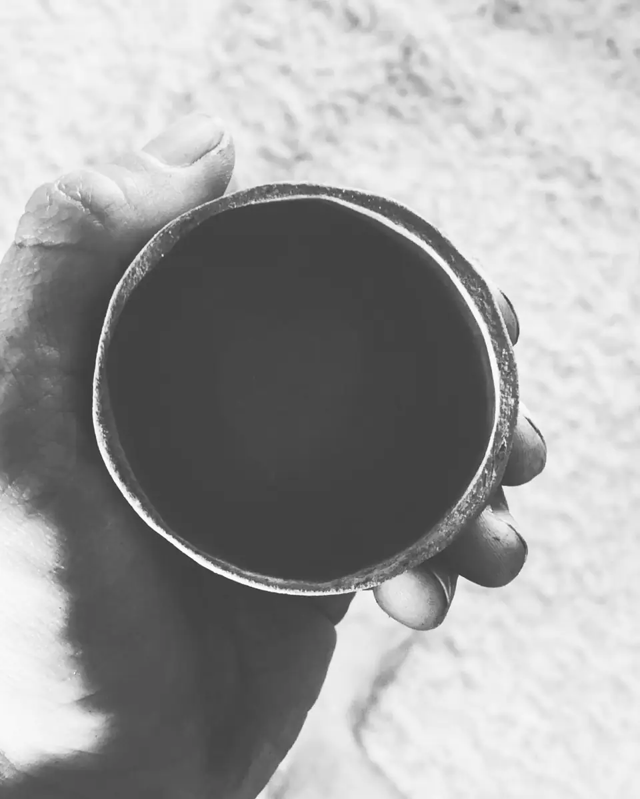
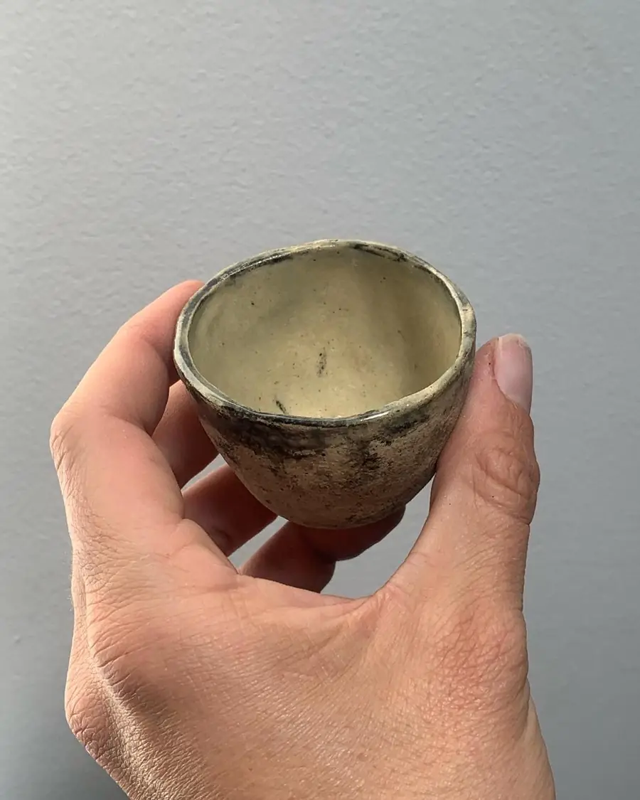
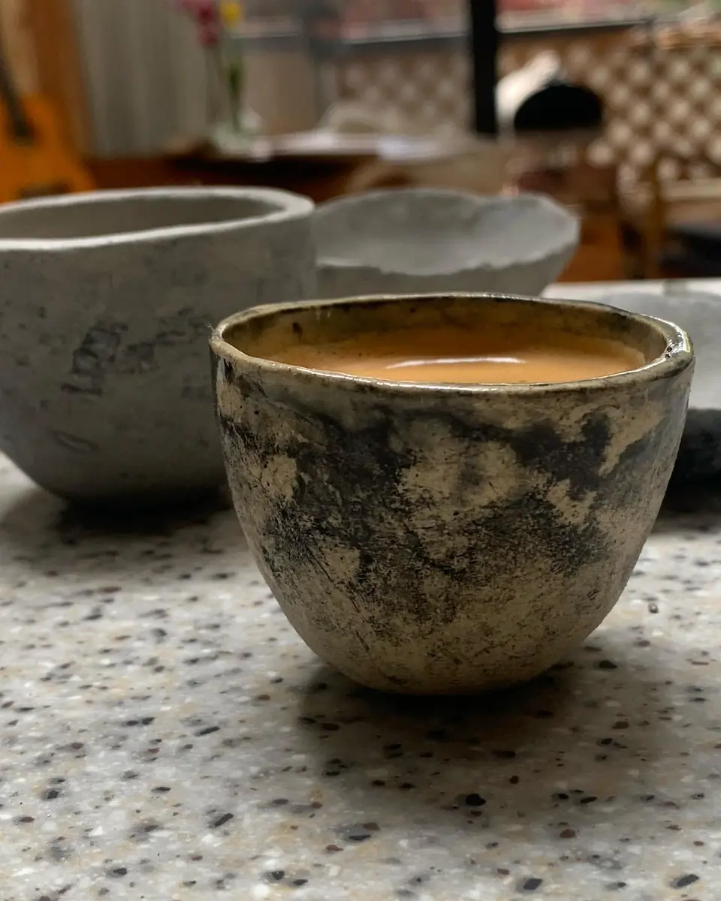
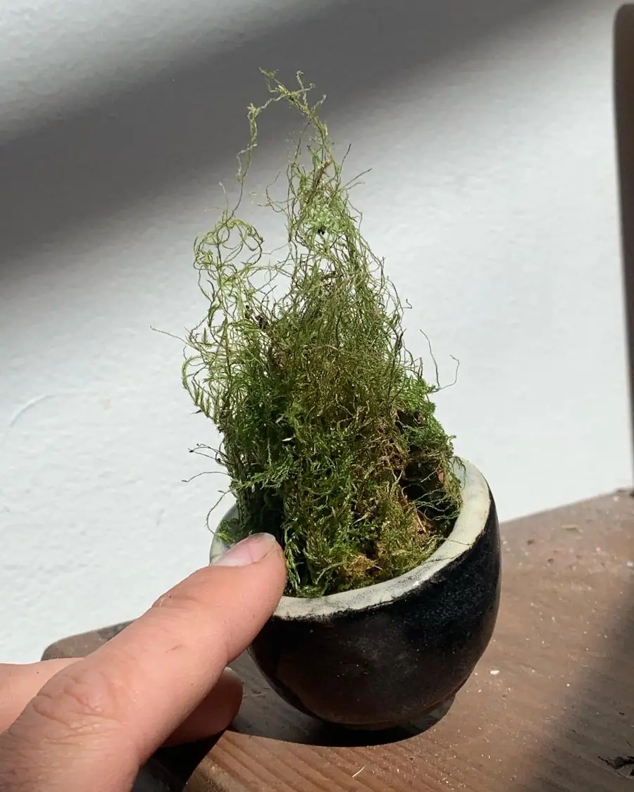
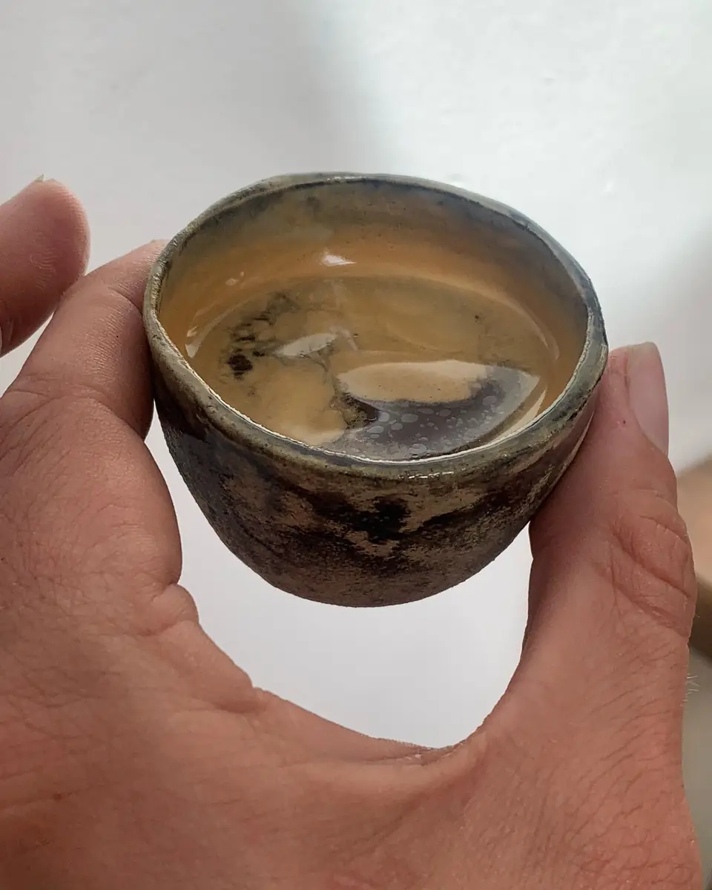
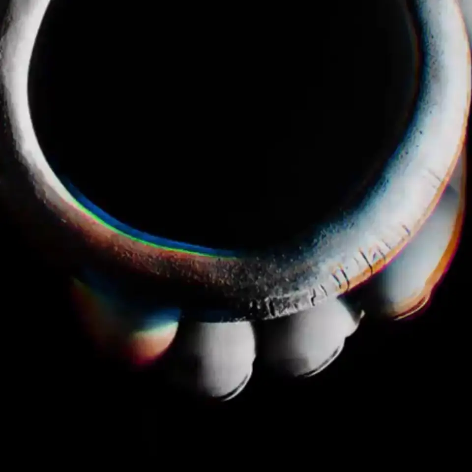
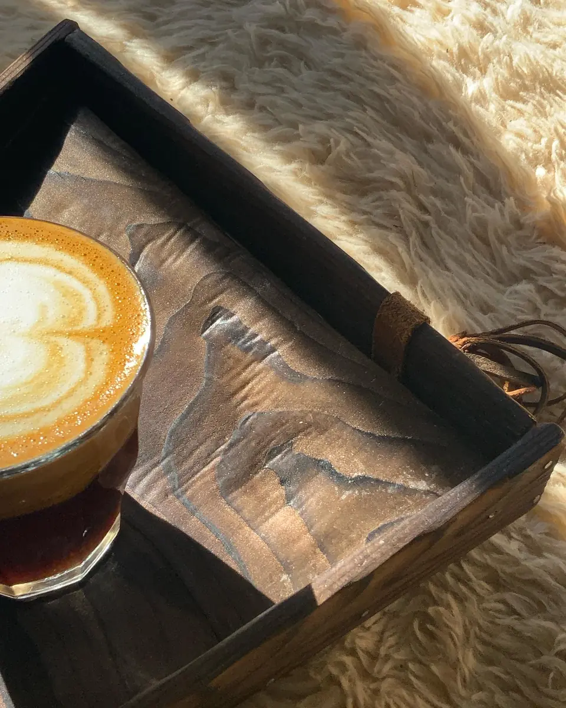
[Gill writes] what a drop is, and when the next one is
join the drops list www.joioco.com ↗carving
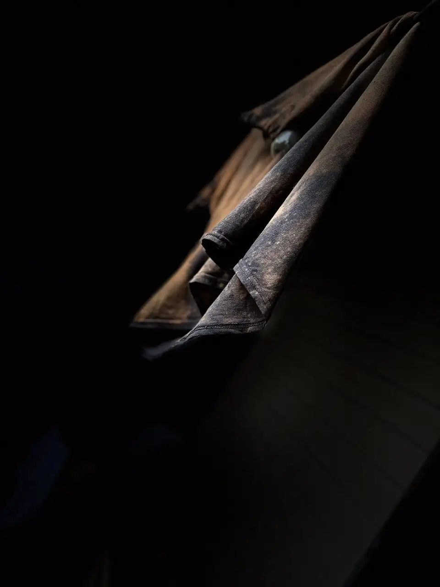
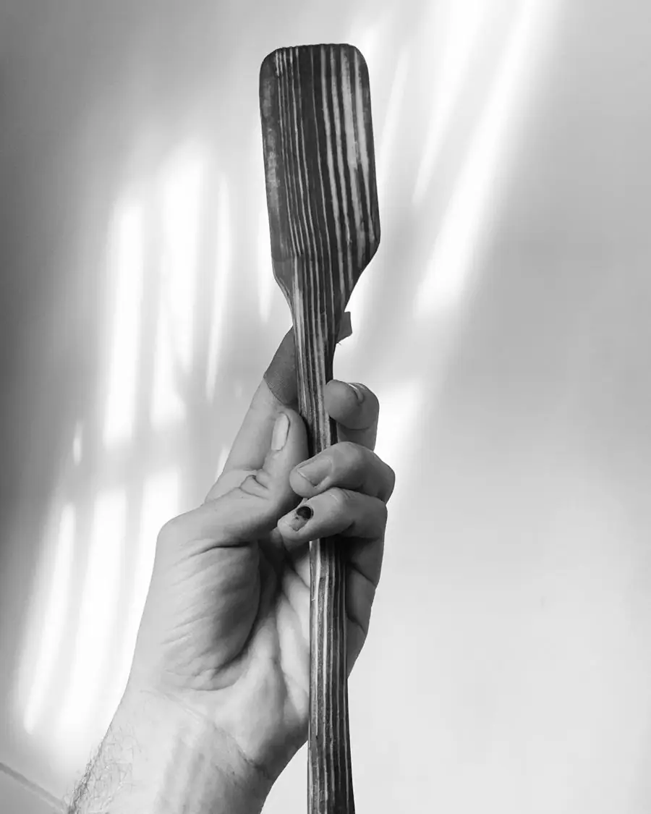
industrial + spatial design
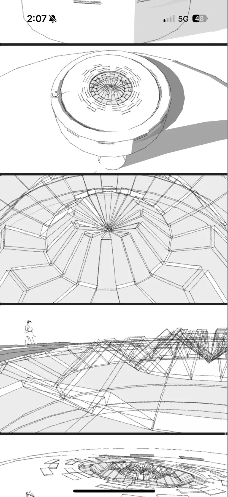
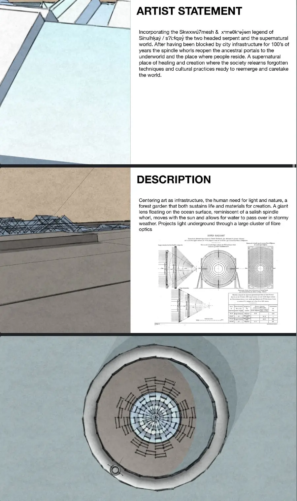
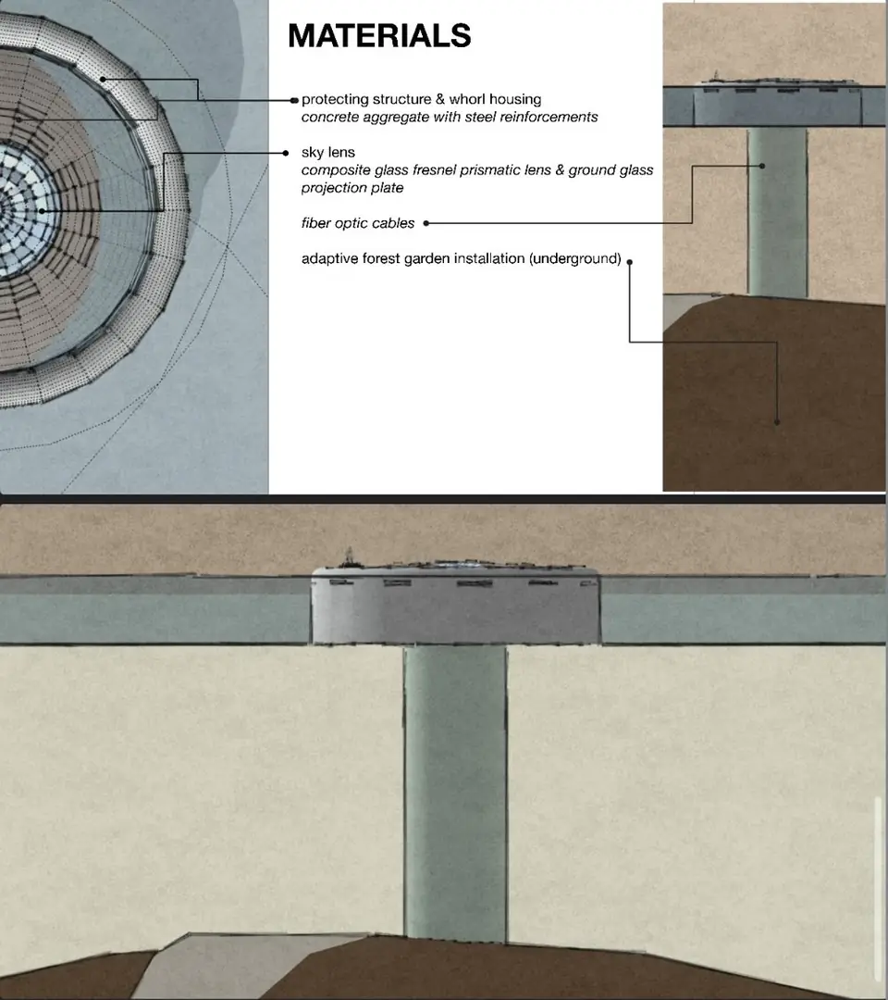
[Gill writes] design note